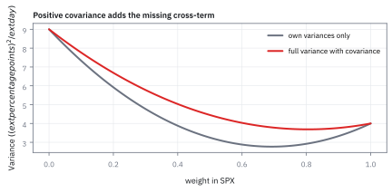
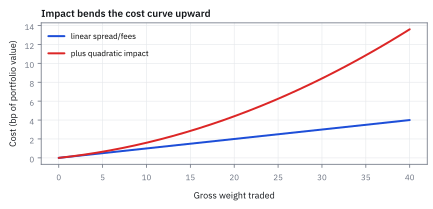
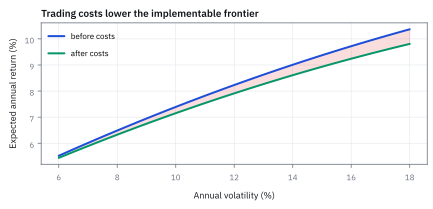

8.8 Mean-Variance with Transaction Costs
คิดค่าปรับจากการเปลี่ยนพอร์ตไปพร้อมกับการจัดสรร
พอร์ต \$50 ล้านถืออยู่ 40/40/20 optimizer ที่ไม่คิดต้นทุนสั่งให้เปลี่ยนเป็น 60/30/10 ค่าซื้อขาย 10 bp ต้องจ่ายเท่าไร และถ้ากองทุนจำกัด turnover ไว้ 10% ควรหยุดตรงไหน?
เฉลย: ต้องซื้อขายรวม \$20 ล้าน (turnover 20%) จ่าย \$20,000 cap 10% เดินได้ครึ่งทางที่ 50/35/15 จ่าย 10,000 และถ้ากำไรส่วนเพิ่มของสินทรัพย์ไหนชนะต้นทุนไม่ได้ทั้งขาซื้อและขาขาย ในช่องกว้าง 20 bp รอบพอร์ตเดิม คำตอบที่ดีที่สุดคืออย่าเทรดเลย
transaction cost คือค่าใช้จ่ายจากการปรับ position; mean-variance optimization with transaction costs ชั่ง expected return, variance และต้นทุนขยับพร้อมกัน
portfolio ไม่ย้ายฟรี: optimizer ต้องให้ turnover ชนะ fee, spread และ price impact ก่อนเปลี่ยนน้ำหนัก
ศัพท์ที่ใช้ในหัวข้อนี้
- transaction cost
- เงินที่เสียจาก commissions, spread และ market impact เมื่อเปลี่ยน holdings ใช้หัก expected benefit ของ trade ก่อนส่ง order
- turnover
- ขนาดการซื้อขายเทียบมูลค่าพอร์ต โดยหัวข้อนี้นิยามเป็นครึ่งหนึ่งของผลรวม absolute weight changes ใช้จำกัดความแรงของ rebalance
- basis point (bp)
- หนึ่งส่วนในหนึ่งหมื่นหรือ 0.0001 ของ notional ใช้เสนออัตราค่าซื้อขายขนาดเล็ก
- market impact
- การที่ order ของเราเองขยับราคาเสียเปรียบ ใช้เพิ่มต้นทุนที่โตตามขนาดและ liquidity ของ trade
- no-trade region
- บริเวณน้ำหนักที่ expected improvement ยังไม่คุ้มต้นทุนใช้ป้องกันการ rebalance เล็กและถี่เกินไป
- turnover constraint
- ขอบบนของผลรวม absolute trades ตามนิยามที่ระบุ ใช้ควบคุม capacity, taxes และ operational load
- gross traded notional
- ผลรวมมูลค่าซื้อและขายโดยไม่หักกลบกัน ใช้คำนวณค่าซื้อขายที่เกิดทั้งสองฝั่ง
- spread
- ช่องว่างระหว่าง bid price กับ ask price ใช้ประมาณต้นทุนข้ามราคากลางเมื่อส่งคำสั่งทันที
- quadratic programming (QP)
- การแก้ปัญหา optimization ที่มี objective function เป็นกำลังสองและข้อจำกัดเป็นเชิงเส้น ใช้คำนวณพอร์ตที่มีต้นทุนการซื้อขาย
- subgradient
- ความชันทั่วไปของ function ที่มีจุดหักมุม เช่น ค่าสัมบูรณ์ ใช้หาจุด optimal ในบริเวณที่ไม่มี derivative เดี่ยว
- implementation shortfall
- ผลต่างระหว่างผลตอบแทนของพอร์ตบนกระดาษกับผลตอบแทนจริงที่ทำได้หลังหักค่าธรรมเนียมและผลกระทบตลาดทั้งหมด
สัญลักษณ์ที่ใช้ในหัวข้อนี้
| สัญลักษณ์ | ความหมาย | หน่วย |
|---|---|---|
| $W$ | portfolio value ก่อน rebalance | USD |
| $w_0,w$ | weight vector ปัจจุบันและหลัง rebalance | fraction of portfolio value |
| $\Delta w=w-w_0$ | weight trade vector | fraction of portfolio value |
| $c_i$ | linear cost rate ของสินทรัพย์ $i$ | USD cost ต่อ USD traded |
| $\tau$ | one-way turnover cap ตามนิยามครึ่ง L1 | fraction of portfolio value |
| $\mu,V$ | ผลตอบแทนคาดหวังต่อปีของแต่ละสินทรัพย์ และตารางความเสี่ยงร่วมรายปี (annual covariance) | decimal/year และ (decimal return)²/year |
| $\kappa_i$ | quadratic impact coefficient | decimal cost ต่อ squared weight trade |
| $u_i, v_i$ | สัดส่วนน้ำหนักขาซื้อและขาขายของสินทรัพย์ $i$ | fraction of portfolio value |
| $\lambda_i$ | ตัวคูณ price impact ต่อสภาพคล่องของสินทรัพย์ $i$ | unitless |
| $Q_i$ | จำนวนหุ้นที่ส่งคำสั่งซื้อขายของสินทรัพย์ $i$ | shares |
| $\nu$ | Lagrange multiplier ของข้อบังคับงบประมาณ $\mathbf{1}^{\mathsf{T}}w=1$ | decimal return |
ที่มาที่ไป: พอร์ตในกระดาษ กับพอร์ตที่ซื้อขายจริง
ทฤษฎีจัดพอร์ตบอกว่าน้ำหนักที่ดีที่สุดคือชุดนี้ แต่ไม่ได้บอกว่าการเดินทางจากพอร์ตปัจจุบันไปถึงชุดนั้น มีค่าใช้จ่ายเท่าไร
ในทางปฏิบัติค่าใช้จ่ายนั้นมักกินผลตอบแทนที่คำนวณไว้เกินครึ่ง โดยเฉพาะกลยุทธ์ที่ต้องปรับพอร์ตบ่อย
ที่แย่กว่านั้นคือถ้าคำนวณน้ำหนักที่ดีที่สุดใหม่ทุกวันแล้วเดินตามทุกครั้ง จะซื้อขายไปมาตลอดเวลา เพราะน้ำหนักที่คำนวณได้เปลี่ยนทุกวันตามข้อมูลใหม่ ทั้งที่ความจริงแทบไม่เปลี่ยน
ทางแก้คือใส่ค่าใช้จ่ายเข้าไปในโจทย์ตั้งแต่ต้น แทนที่จะคิดทีหลัง และผลที่ได้คือมีช่วงหนึ่งที่คำตอบคือไม่ต้องทำอะไรเลย ซึ่งเป็นผลที่ใช้ได้จริงที่สุดของหัวข้อนี้
ที่มาของทฤษฎี: การต่อสู้กับภาพลวงตาของ frictionless market
Harry Markowitz วางรากฐาน Mean-Variance Optimization ในปี 1952 ภายใต้สมมติฐานว่าตลาดไม่มีแรงเสียดทาน ผู้ลงทุนสามารถซื้อขายสินทรัพย์ในปริมาณเท่าใดก็ได้โดยไม่ต้องจ่ายค่าคอมมิชชัน ไม่มี bid-ask spread และราคาตลาดไม่ขยับหนีคำสั่งซื้อขาย แต่เมื่อระบบคอมพิวเตอร์ของกองทุนสถาบันเริ่มนำแบบจำลองไปคำนวณพอร์ตจริงในทศวรรษ 1970 ถึง 1980 ผลลัพธ์ในกระดาษกลับไม่เคยเกิดขึ้นจริงในบัญชี
ปัญหาที่เกิดขึ้นคือ optimizer ที่ไม่มีต้นทุนการซื้อขายจะทำตัวเป็นเครื่องขยายความคลาดเคลื่อน ดังที่ Richard Michaud สรุปไว้ในปี 1989 ว่าแบบจำลองจะทุ่มน้ำหนักสุดตัวให้กับสินทรัพย์ที่ตัวเลขสถิติในอดีตดูดีเกินจริง แม้ค่าพยากรณ์จะเปลี่ยนไปเพียงเล็กน้อยจากสัญญาณรบกวนของข้อมูล ผลลัพธ์คือพอร์ตเกิด turnover มหาศาลในทุกรอบการคำนวณ จนผลตอบแทนส่วนเกินทั้งหมดถูกเผาทำลายไปกับค่าธรรมเนียมการซื้อขาย
ในยุคแรก ผู้จัดการกองทุนแก้ปัญหาด้วยกฎเกณฑ์เฉพาะหน้า เช่น บังคับปรับพอร์ตเฉพาะสิ้นไตรมาส หรือสั่งห้ามซื้อขายหากน้ำหนักเปลี่ยนไม่ถึงเกณฑ์ที่กำหนด แต่วิธีการเหล่านี้ไม่มีทฤษฎีรองรับ จนกระทั่งช่วงต้นทศวรรษ 1990 Mark Davis และ Anthony Norman (1990) พร้อมด้วย Dumas และ Luciano (1991) ได้พิสูจน์โครงสร้างทางคณิตศาสตร์ว่า เมื่อมี proportional transaction cost คำตอบที่ดีที่สุดจะมีแถบ no-trade region ที่สั่งให้ผู้ลงทุนอยู่เฉย ๆ
ต่อมา Andre Perold (1988) ได้วางกรอบ implementation shortfall เพื่อวัดต้นทุนแฝง และ Robert Almgren กับ Neil Chriss (ราว ๆ ปี 2000) ได้สร้างแบบจำลอง market impact ที่แสดงว่าต้นทุนจากการดันราคาตลาดจะเร่งขึ้นเป็นกำลังสองตามขนาดคำสั่งซื้อ ส่งผลให้การจัดพอร์ตเชิงปริมาณยุคใหม่เปลี่ยนจากการหาพอร์ตที่สวยงามบนกระดาษ มาเป็นการแก้ปัญหา optimization ที่คำนวณ trade vector ควบคู่ไปกับต้นทุนจริง
โจทย์: ปรับพอร์ต \$50 ล้านไปหาเป้าหมายใหม่
โจทย์ให้อะไรมาบ้าง: mean-variance แบบมี friction ต้องตัดสินใจ trade จาก $w_0$ เพราะต้นทุนขึ้นกับระยะที่เดินไปหา $w$ ตัวอย่างใช้ portfolio value \$50 ล้าน, one-period annual forecasts และ linear cost 10 bp เท่ากันทุกกองเพื่อให้ตรวจเลขได้ ตลาดจริงต้องใช้ bid–ask, participation และ impact estimates รายสินทรัพย์
ขั้นที่ 1 — นิยาม trade และ turnover ให้ไม่กำกวม
ก่อนคิดต้นทุนได้ ต้องนิยามก่อนว่า 'ซื้อขายเท่าไร' นับอย่างไร เพราะซื้อหนึ่งขายหนึ่งจะนับเป็นหนึ่งหรือสอง ให้ผลต่างกันเป็นเท่าตัว
absolute weight changes รวม 0.40 จึงทำให้ one-way turnover ตามนิยามครึ่ง L1 เท่ากับ 20% ของ portfolio value; buys และ sells อย่างละ 20%
ขั้นที่ 2 — ที่มาของ turnover: กฎสมดุล buy เท่ากับ sell
คำถามพื้นฐานที่สุดที่มักถูกมองข้ามคือ ทำไมสูตร turnover ถึงต้องมีตัวหารสองอยู่ข้างหน้า และทำไมไม่นับมูลค่าการซื้อขายทั้งหมดตรง ๆ คำตอบเริ่มต้นจากกฎอนุรักษ์งบประมาณของพอร์ตการลงทุน
กฎข้อบังคับว่าเงินลงทุนต้องครบ 100% เสมอ บังคับให้ผลรวมน้ำหนักของพอร์ตใหม่และพอร์ตเดิมมีค่าเท่ากับ 1 ส่งผลให้ผลรวมสุทธิของ trade vector ทุกตัวต้องหักล้างกันจนเหลือศูนย์พอดี
เมื่อแยกการปรับพอร์ตออกเป็นขาซื้อ $u_i$ และขาขาย $v_i$ จะพบความจริงทางบัญชีว่า เงินสดที่ใช้ซื้อสินทรัพย์ใหม่ต้องมาจากการขายสินทรัพย์เดิมออกไปในมูลค่าที่เท่ากันเป๊ะ ทำให้ผลรวมของขาซื้อเท่ากับผลรวมของขาขายเสมอ
มูลค่าการซื้อขายรวมสองขาจึงมีขนาดเป็นสองเท่าของเงินสดที่ถูกหมุนเวียน สูตร one-way turnover จึงต้องหารด้วยสองเพื่อวัดสัดส่วนสินทรัพย์ที่ถูกเปลี่ยนหน้าไปจริง ซึ่งในตัวอย่างนี้มีค่า 20% เท่ากับ \$10 ล้าน
ขั้นที่ 3 — แปลงน้ำหนักเป็น USD cost
น้ำหนักเป็นสัดส่วน แต่ค่าธรรมเนียมคิดเป็นเงิน จึงต้องคูณด้วยขนาดพอร์ตก่อน
portfolio value คูณผลรวม absolute trades นับทั้ง buy และ sell legs; ตัวเลขนี้ต่างจาก one-way turnover notional ที่ \$10 ล้าน
ขั้นที่ 4 — Linear cost ที่ตรวจได้ทุกบรรทัด
ใช้รูปต้นทุนที่ง่ายที่สุดก่อน คือจ่ายตามปริมาณตรง ๆ จะได้ตรวจเลขได้ทุกบรรทัด
สิบ basis points แปลงเป็น decimal 0.001 แล้วคูณ gross traded notional \$20 ล้าน ให้ cash cost \$20,000
ขั้นที่ 5 — Mean-variance objective หลังใส่ friction
เป้าหมายข้อนี้มีสี่พจน์ ซึ่งดูเหมือนรวมของหลายอย่างที่ไม่มีที่มา แต่ทุกพจน์มาจากสองคำถามเดียวกัน: เราได้อะไร และเราเสียอะไร
สองพจน์แรกคือผลตอบแทนที่คาดหวังกับค่าปรับความเสี่ยงจากบทก่อน สองพจน์หลังคือค่าใช้จ่ายจากการเทรด ซึ่งแยกเป็นสองส่วนตามกลไกที่ต่างกัน
ค่าใช้จ่ายก้อนแรกคือส่วนต่างราคาซื้อขาย ทุกหน่วยที่เทรดต้องจ่ายครึ่งส่วนต่างนี้ ไม่ว่าจะเทรดเล็กหรือใหญ่ และเพราะขนาดของธุรกรรมคือผลต่างน้ำหนักคูณขนาดพอร์ต ค่าใช้จ่ายจึงแปรผันตรงกับค่าสัมบูรณ์ของผลต่างนั้น
ผลที่ได้คือพจน์ค่าสัมบูรณ์ในเป้าหมาย และ coefficient ของมันคือครึ่งส่วนต่างนั่นเอง ซึ่งวัดได้จากข้อมูลตลาดโดยตรง ไม่ต้องประมาณ
ค่าใช้จ่ายก้อนที่สองคือผลกระทบต่อราคา ซึ่งไม่แปรผันตรง แต่โตเร็วขึ้นเมื่อเทรดก้อนใหญ่ เพราะคำสั่งของเรากินสภาพคล่องไปเรื่อย ๆ ขั้นที่แล้วจึงทำ integral ออกมาได้พจน์กำลังสอง
พอประกอบสี่พจน์เข้าด้วยกันจึงได้เป้าหมายในสองบรรทัดสุดท้าย สังเกตว่าไม่มีพจน์ใดที่ถูกใส่เข้ามา เพราะอยากให้คำตอบสวย ทุกพจน์แทนค่าใช้จ่ายจริงก้อนหนึ่ง และการแก้ปัญหานี้จึงเป็นการหาจุดที่ ผลตอบแทนที่คาดหวังหักทุกค่าใช้จ่ายแล้วสูงสุด
ขั้นที่ 6 — ที่มาของ quadratic impact: เมื่อการเทรดดันราคาตลาด
พจน์กำลังสองใน objective function ไม่ได้ถูกตั้งขึ้นมาลอย ๆ เพื่อความสะดวกในการคำนวณ แต่มีรากฐานมาจากฟิสิกส์ของการส่งคำสั่งซื้อขายในตลาดจริงตามแบบจำลองของ Almgren-Chriss
เมื่อส่งคำสั่งซื้อขายขนาดใหญ่ คำสั่งซื้อจะค่อย ๆ กินสภาพคล่องในสมุดคำสั่งซื้อ ส่งผลให้ราคาที่จับคู่ได้ขยับสูงขึ้นเป็นเส้นตรงตามจำนวนหุ้นที่สะสมไปแล้ว โดยมี $\lambda_i$ เป็นตัวคูณความไวต่อสภาพคล่อง
การหาเงินสดทั้งหมดที่ต้องจ่ายจึงต้องคำนวณพื้นที่ใต้กราฟราคาด้วย integral ของสมการเส้นตรง ซึ่งผลลัพธ์ของการทำ integral บนตัวแปรยกกำลังหนึ่งจะได้พจน์ยกกำลังสองหารสองเสมอ นี่คือจุดกำเนิดของเลขชี้กำลัง 2
เมื่อแปลงจำนวนหุ้นกลับมาเป็นสัดส่วนน้ำหนักพอร์ต จะได้ค่าปรับต้นทุนที่แปรผันตาม $(w_i - w_{0i})^2$ โดยค่า $\kappa_i$ จะยิ่งโตขึ้นตามขนาดพอร์ต $W$ ทำให้กองทุนขนาดใหญ่ถูกลงโทษหนักกว่าหากเร่งเทรดเร็วเกินไป
ขั้นที่ 7 — แปลง absolute value เป็น Quadratic Program (QP) มาตรฐาน
คอมพิวเตอร์ไม่สามารถหา derivative ของค่าสัมบูรณ์ $|w_i - w_{0i}|$ ตรงจุดยอดแหลมได้โดยตรง ในทางปฏิบัติจึงต้องแปลงโจทย์ให้เป็น Quadratic Programming (QP) มาตรฐานที่เรียบสนิททุกจุด
กลวิธีมาตรฐานคือแยกการเปลี่ยนแปลงน้ำหนักออกเป็นตัวแปรช่วยสองตัว คือ vector ซื้อ $u$ และ vector ขาย $v$ ซึ่งกำหนดให้เป็นบวกหรือศูนย์เสมอ แล้วแทนที่ค่าสัมบูรณ์ด้วยผลบวก $u_i + v_i$
ตัวแก้ปัญหาทางคณิตศาสตร์จะไม่ยอมเลือกให้ซื้อและขายสินทรัพย์เดียวกันพร้อมกัน เพราะหากทั้งสองตัวมีค่ามากกว่าศูนย์พร้อมกัน จะทำให้ต้นทุน $c_i(u_i + v_i)$ สูงขึ้นโดยไม่ช่วยให้พอร์ตขยับไปไหนเลย
การแทนที่นี้ทำให้ objective function และข้อจำกัดทั้งหมดกลายเป็นรูปแบบกำลังสองและเชิงเส้นที่เรียบ ตัวแก้ Quadratic Programming (QP) เชิงพาณิชย์จึงหาจุด optimal ได้อย่างรวดเร็วและแม่นยำ
ขั้นที่ 8 — Turnover cap เป็น constraint ที่ convex
อีกวิธีคือจำกัดปริมาณซื้อขายไปเลย ข้อดีคือยังแก้ได้ด้วยเครื่องมือเดิม
L1 turnover ball ตัด feasible set ให้เหลือ portfolios ที่ซื้อขายไม่เกิน cap; budget และ long-only constraints ยังต้องผ่านพร้อมกัน
ขั้นที่ 9 — Cap 10% เดินได้ครึ่งทาง
นี่คือพอร์ตที่ทำได้ตาม cap เมื่อเลือกเดินเป็นเส้นตรงจากพอร์ตเดิมสู่เป้าหมาย ยังไม่ได้พิสูจน์ว่าเป็นพอร์ตที่ให้ objective สูงสุด การหาคำตอบดีที่สุดต้องแก้ optimisation ภายใต้ constraints ทั้งหมด
แนวตรงสู่ frictionless target ใช้ turnover 20%; cap 10% อนุญาต สัดส่วน 0.5 จึงซื้อ SPY 10 จุด และขาย iShares Core U.S. Aggregate Bond exchange-traded fund (AGG) กับ QQQ อย่างละ 5 จุด
ขั้นที่ 10 — ต้นทุนของ trade ที่ถูก cap
คำนวณว่าการหยุดครึ่งทางนั้นแลกมาด้วยอะไร เทียบกับเงินที่ประหยัดได้
gross traded notional ลดครึ่งหนึ่งเป็น \$10 ล้าน และ linear cost ลดเป็น \$10,000 ภายใต้ cost rate คงที่
ขั้นที่ 11 — เงื่อนไข no-trade แบบหนึ่งสินทรัพย์
ผลที่ใช้ได้จริงที่สุดของหัวข้อนี้ คือมีช่วงหนึ่งที่คำตอบคือไม่ต้องทำอะไรเลย แม้พอร์ตจะไม่ตรงเป้าหมายก็ตาม และเหตุผลอยู่ที่หักมุมของค่าสัมบูรณ์ในบรรทัดที่สี่ ไม่ใช่เพราะใครตั้งกฎห้ามเทรด
บรรทัดแรกคือกำไรส่วนเพิ่มต่อหนึ่งหน่วยน้ำหนัก ยังไม่คิดค่าธรรมเนียม ส่วนบรรทัดที่สองถึงสามคือความชันของต้นทุนสองข้างของจุดที่ยังไม่ซื้อขาย เครื่องหมายบวกและลบข้างบนหมายถึงเข้าใกล้จากทางขวาและทางซ้าย ค่าสัมบูรณ์ทำให้สองข้างไม่เท่ากัน จึงเกิดหักมุมตรงจุดนั้น
เพิ่มหรือลดน้ำหนักจะคุ้มก็ต่อเมื่อกำไรส่วนเพิ่มหลังหักราคาของงบ ชนะต้นทุนที่ต้องจ่ายเพื่อขยับ สองบรรทัดสุดท้ายคือกรณีที่ไม่ชนะทั้งสองทาง คำตอบที่ดีที่สุดจึงคืออยู่เฉย ๆ โดย $\nu$ มาจากข้อบังคับผลรวมน้ำหนักเป็น 1 และต้องดูทุกช่องพร้อมกัน ไม่ใช่ทีละช่อง
ขั้นที่ 12 — พิสูจน์ No-Trade Band จาก Subgradient และ KKT
ทำไมจุดที่คุ้มที่สุดถึงเป็นการไม่ซื้อขายเลย การพิสูจน์ด้วย Karush-Kuhn-Tucker (KKT) ผ่าน subgradient เผยให้เห็นกลไกที่แท้จริงว่า ทำไม friction จึงสร้างโซนคุ้มครองรอบพอร์ตปัจจุบัน
function ค่าสัมบูรณ์มีจุดหักมุมที่ $w_i = w_{0i}$ จึงไม่มี derivative เดี่ยว แต่มีกลุ่มความชันที่ยอมรับได้เรียกว่า subdifferential ซึ่งครอบคลุมค่าตั้งแต่ $-1$ ถึง $+1$ ทั้งหมด เขียนแทนด้วย s ที่เลือกได้ในช่วงนั้น
เงื่อนไขความเหมาะสมของ Lagrange บังคับให้ผลรวมของ marginal benefit หักล้างกับ subgradient ของต้นทุนพอดี หากความชันของประโยชน์สุทธิ $g_i-\nu$ มีค่าน้อยกว่าค่าธรรมเนียม $c_i$ จุดศูนย์จะตกอยู่ในช่วงนี้ทันที
ผลลัพธ์นี้สร้างย่าน no-trade band ที่มีความกว้างเท่ากับ $2c_i$ หรือ 20 basis points หากสัญญาณคาดการณ์ไม่ได้แรงพอที่จะทะลุขอบเขตนี้ การขยับพอร์ตจะทำให้ขาดทุนสุทธิ คำตอบที่ให้กำไรสูงสุดจึงคือการไม่ทำอะไรเลย
แล้วเอาไปใช้ทำอะไรได้จริงบ้าง
การคิดต้นทุนการซื้อขายไปพร้อมกับการจัดสรร เป็นความต่างระหว่างพอร์ตในกระดาษกับพอร์ตจริง
ใช้ตัดสินว่าควรปรับพอร์ตหรือไม่ เพราะบ่อยครั้งคำตอบที่ถูกคือไม่ต้องทำอะไรเลย
ใช้กำหนดเพดานการซื้อขายต่อรอบ เพื่อไม่ให้ต้นทุนกินผลตอบแทนที่กลยุทธ์หามาได้
ใช้ประเมินว่ากลยุทธ์ที่ซื้อขายบ่อยนั้นเหลืออะไรจริงหลังหักต้นทุน ซึ่งมักเหลือน้อยกว่าที่คิดมาก
Figure 8.8a — น้ำหนักปัจจุบัน แบบมีเพดาน และแบบไม่มีต้นทุน

แท่งกลางคือทางเลือกที่ทำได้เมื่อเดินครึ่งทางไปยัง target จึงใช้ turnover 10% พอดี ภาพนี้เปรียบเทียบขนาด trade และไม่ได้อ้างว่าการเดินครึ่งทางเป็นคำตอบดีที่สุดของทุก objective
Figure 8.8b — ต้นทุนโตตาม turnover

เมื่อ linear cost คงที่ 10 bp ของ gross notional cash cost เพิ่มเป็นเส้นตรง: one-way turnover 20% บน portfolio value \$50 ล้าน เท่ากับ \$20,000
Figure 8.8c — ต้นทุน spread ที่เป็นเส้นตรง บวก impact ที่ไม่เป็นเส้นตรง

spread cost โตเส้นตรง แต่ market impact โค้งขึ้นเมื่อ trade ใหญ่ การใช้ 10 bp คงที่กับ order ทุกขนาดจึงมองโลกใจดีเกินไป
Figure 8.8d — frontier ก่อนหักต้นทุน เทียบกับหลังหักต้นทุน

ภาพสังเคราะห์แสดงว่าต้นทุนลด expected return อย่างไร ในภาพนี้สมมติต้นทุนต่อ gross notional เท่ากับ 1% จึงหักสองเท่าของ one-way turnover ในหน่วย จุด ต่างจากตัวอย่างก่อนหน้าที่ใช้ 10 basis points ภาพไม่ได้เกิดจากการแก้ optimiser หรือข้อมูลผลตอบแทนจริง
คำตอบ — turnover cap ลด trade เหลือ 10M USD
คำถาม: เปลี่ยนจาก 40/40/20 เป็น 60/30/10 เสียค่าซื้อขายเท่าไร และถ้า cap turnover 10% ต้องหยุดตรงไหน?
ของที่มี: ขั้นที่ 1 ถึง 12
ถ้าเดินเต็มทาง ซื้อขายรวม \$20 ล้าน turnover 20% จ่าย \$20,000
คำตอบ: turnover cap 10% พาน้ำหนักจาก [0.40,0.40,0.20] ไป [0.50,0.35,0.15] จึงซื้อ SPY \$5 ล้าน และขาย AGG กับ QQQ อย่างละ \$2.5 ล้าน รวม gross trade \$10 ล้าน และ cost \$10,000
ตรวจเองใน 10 วินาที: absolute weight changes รวม 0.20 ดังนั้น turnover แบบหารสองเท่ากับ 0.10; \$10 ล้าน × 0.001 ต้องได้ cost \$10,000
ใช้ตัดสินใจ: ส่ง target ที่ถูก cap นี้แทนเป้าหมาย 60/30/10 เมื่อ mandate จำกัด turnover และต้องแทน 10 bp ด้วย cost rate รายสินทรัพย์ก่อนใช้งานจริง
โค้ดตรวจ turnover ต้นทุน และพอร์ตที่ถูก cap
import numpy as np
W=50_000_000; w0=np.array([.40,.40,.20]); wt=np.array([.60,.30,.10]); c=0.001
dw=wt-w0; TO=0.5*np.abs(dw).sum()
assert abs(dw.sum())<1e-12 and abs(TO-0.20)<1e-12
assert abs(W*np.abs(dw).sum()-20_000_000)<1e-6 and abs(W*c*np.abs(dw).sum()-20_000)<1e-6
wc=w0+0.10/TO*dw
assert np.allclose(wc,[.50,.35,.15]) and abs(0.5*np.abs(wc-w0).sum()-0.10)<1e-12
assert abs(W*c*np.abs(wc-w0).sum()-10_000)<1e-6โค้ดนี้ตรวจว่าการซื้อขายรวมเป็นศูนย์ turnover 20% ยอดซื้อขาย 20 ล้าน ค่าใช้จ่าย 20,000 และพอร์ตที่เดินครึ่งทางตาม cap 10% คือ 50/35/15 ซึ่งจ่าย 10,000
กับดัก: ใช้คำว่า turnover โดยไม่บอกนิยาม
บางระบบรายงานผลรวม absolute trades 40% ขณะที่หัวข้อนี้รายงานครึ่งหนึ่งเป็น 20% ทั้งสองอาจอธิบาย trade เดียวกัน ต้องบันทึกสูตร denominator และการนับ buy/sell legs เสมอ อีกจุดคือ annual expected return ต้องเทียบกับ annualized cost ของ rebalance frequency ที่สอดคล้องกัน
ข้อจำกัด: วิธีนี้สมมติอะไร และของจริงเป็นอย่างไร
| เรื่อง | วิธีนี้สมมติว่า | ของจริงเป็นอย่างไร | ผลที่ตามมาเวลาใช้งาน |
|---|---|---|---|
| รูปของต้นทุน | ต้นทุนโตตามปริมาณเป็นเส้นตรง | คำสั่งใหญ่ดันราคาเอง ต้นทุนโตเร็วกว่านั้น | ประเมินต้นทุนของการปรับพอร์ตใหญ่ต่ำเกินไป |
| ความรู้ล่วงหน้า | รู้ต้นทุนก่อนส่งคำสั่ง | รู้จริงหลังจากเทรดเสร็จแล้ว | ต้องใช้ค่าประมาณ และต้องเก็บผลจริงกลับมาปรับค่าประมาณเรื่อย ๆ |
| รอบเดียว | คิดต้นทุนของการปรับรอบนี้ | การปรับวันนี้ส่งผลถึงต้นทุนของวันพรุ่งนี้ | การคิดทีละรอบให้คำตอบที่แย่กว่าการวางแผนหลายรอบพร้อมกัน |
แถวล่างคือเหตุผลที่โต๊ะใหญ่วางแผนการซื้อขายเป็นสัปดาห์ ไม่ใช่ตัดสินใจใหม่ทุกเช้า
สรุปที่ใช้ได้จริง
- transaction costs ทำให้คำตอบขึ้นกับ holdings ปัจจุบัน ไม่ใช่เพียง forecasts
- หัวข้อนี้นิยาม one-way turnover เป็น $\tfrac12\lVert w-w_0\rVert_1$ และแยกจาก gross traded notional
- พอร์ตเต็มเป้าหมายใช้ gross \$20 ล้าน กับ cost \$20,000; cap 10% ลดทั้งคู่ครึ่งหนึ่ง
- production optimisation ต้องรวม asset-specific spread, impact, taxes และข้อจำกัดปฏิบัติการ
- no-trade band กว้าง $2c_i$ เกิดจาก subdifferential ของ absolute cost และ quadratic impact มาจากการ integrate linear price impact